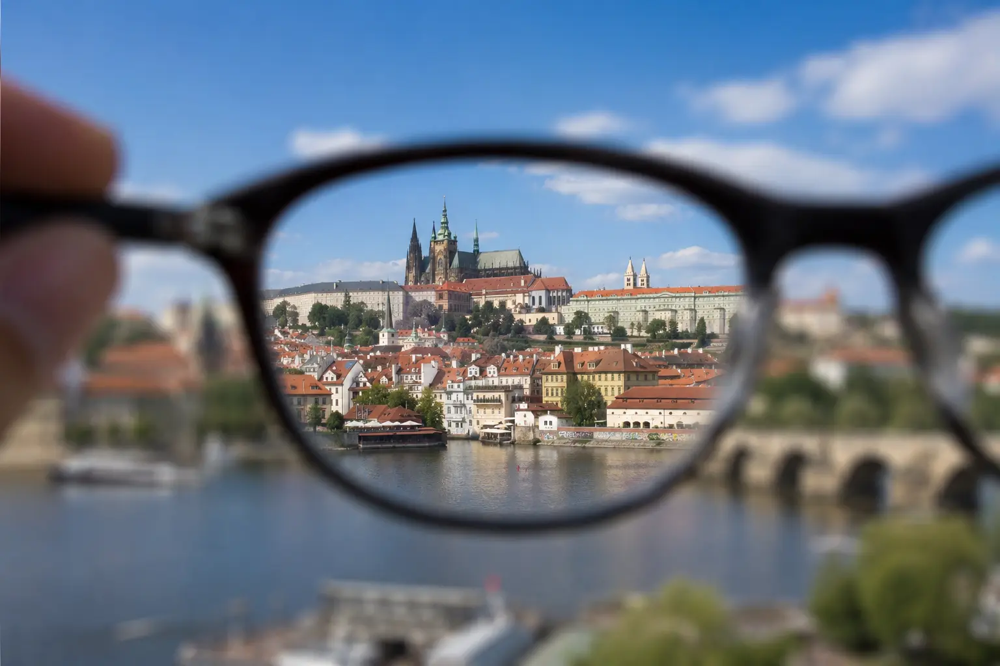
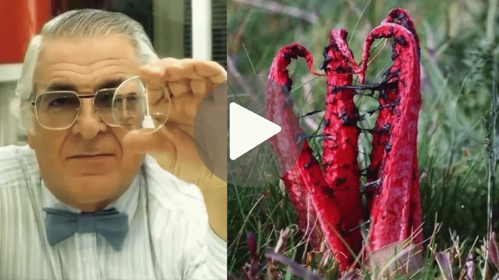

Nejprve je těžké číst titulky. Pak se dopravní značky stávají rozmazanými. Pak přestanete řídit v noci. A jednoho dne — nepozorovaně — někdo jiný vás musí doprovázet všude, kam jdete.
Ztráta zraku nepřichází náhle. Postupuje pomalu, tiše — až dokud se ráno neprobudíte a nezjistíte, že již nerozpoznáváte tváře svých vnoučat zdaleka, nemůžete číst lékařský recept, jiní rozhodují za vás o tom, co můžete a nemůžete dělat. A nejtragičtější věc? Toto není nevyhnutelné.
Dr. Bush, oftalmolog s desetiletími klinických zkušeností, začal klást otázky, které jeho kolegové nikdy nekladli. Proč někteří lidé rychle ztrácejí zrak, zatímco jiní si zachovávají dokonalý zrak až do vysokého věku? Co je jiné v jejich očích?
To, co objevil, otřáslo lékařskou komunitou. Výzkumníci z Oxfordské univerzity, analyzující více než 12 000 pacientů, potvrdili jeho intuici: kvalita vidění přímo souvisí se stavem drobných cév v oku. Když se tyto cévy ucpou, buňky oka nedostávají dostatek kyslíku a živin — a tiše, den po dni, začínají odumírat.
Proces je tichý a postupný. Nebolí. Nedává žádné zjevné signály, dokud poškození není již pokročilé. A každý den, který strávíte bez jednání, zvyšuje počet odumřelých buněk — blížíce se bodu, za kterým již není možné nic udělat.

Ve stejném výzkumu Dr. Bush identifikoval něco mimořádného: jednoduchý trik s přírodním červeným kořenem, který působí přímo na drobné cévy oka — rozpouští ucpávky, odstraňuje nahromaděné toxické usazeniny a umožňuje buňkám opět přijímat kyslík a živiny.
Zdokumentované výsledky překvapily i samotné výzkumníky: pacienti, kteří již nemohli číst bez brýlí, měli problémy s řízením, ztratili schopnost vidět tváře svých blízkých — již v prvních týdnech zaznamenali zlepšení.
Dr. Bush se rozhodl zveřejnit tento objev v bezplatném videu, které podrobně vysvětluje: odkud pochází tento kořen, přesně jak působí na cévy oka a — co je nejdůležitější — jak ho správně používat k dosažení zdokumentovaných výsledků u pacientů.
Toto video je vše, co potřebujete. Nejsou potřeba žádné termíny, recepty ani drahé procedury. Jen úplné informace — srozumitelně a dostupně vysvětlené — abyste mohli jednat ještě dnes, dříve než se poškození stane nevratným.